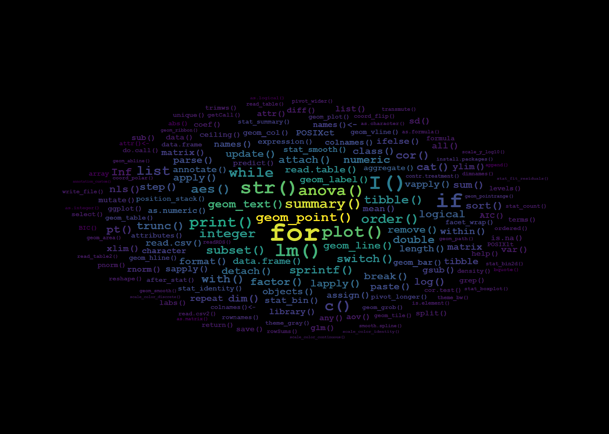
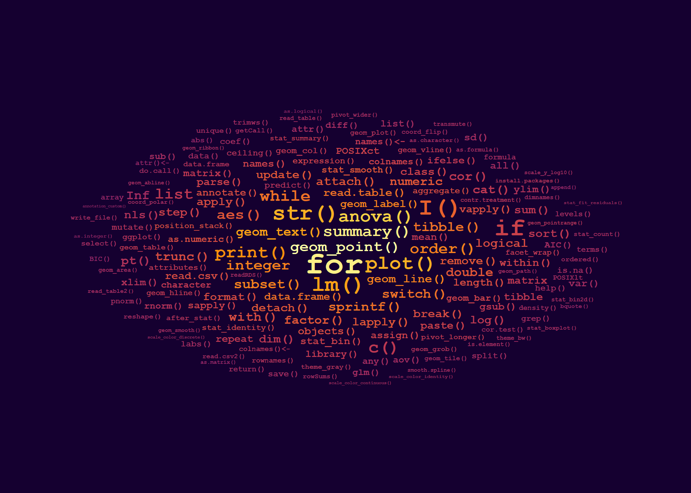
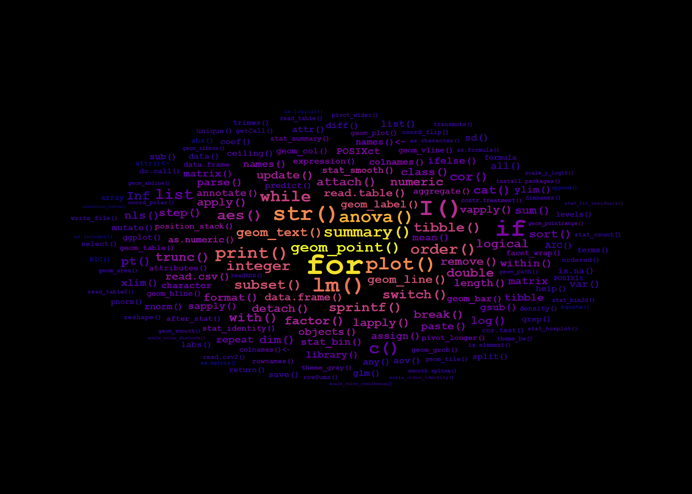

\newcommand{\Rfunction}[1]{\code{#1}\index[rindex]{#1@\texttt{#1}}\index[rcatsidx]{functions and methods!#1@\texttt{#1}}\index[cloudindex]{#1}\xspace}The Word Cloud on the Book Cover
How to make your own
1 Introduction
I created the word clouds on the covers of both editions of “Learn R: As a Language” using an R script that takes as input the file with the R objects and functions included in the R index of the books. The index file was generated when creating the PDF from the LaTeX source files as an word list as simple of possible, not printed as part of the book but including the same terms. This input file still contained some additional information, like page numbers that needed to be stripped into a clean list of words. I here present the R used code for the 2nd edition. If you want to do something similar for your own book, report or thesis you can easily reuse this code after some edits.
2 The word cloud
The word cloud that appears on the cover of the book is based on the frequency, or number of times, with which each R function or command appears in the index included at the back of the book. The wordcloud is a ggplot where frequency is mapped to both colour and size aesthetics and the text of the index entries is mapped to the label aesthetic. The positioning is automatically done by geom_text_wordcloud(). I used one of the Viridis colour scales.

3 Reusable code
First I need to explain how I encoded index entries in the \(\LaTeX\) .Rnw source files. I did not use \index directly in the .Rnw source file but instead defined macros wrapping this command from index building system of \(\LaTeX\). In the case of macros for indexing R related words, the macros also added the mark up (font and shading) used in the main text in the same operation. In fact, I defined different macros for functions, classes, etc., even if some of the definitions were initially identical. This added a lot of flexibility; a flexibility that helped greatly when implementing the code for the word cloud.
I show here only the macro for R functions as an example, although I also used similar macros for methods, classes, operators, etc., which allowed automating the hierarchical grouping of entries in the R indices printed in the book.
Those familiar with \(\LaTeX\) will notice that the macro as defined above adds the argument to three different indexes, and encodes the argument in a “typewriter” font both in the main text and the first two indexes. The third “index” is a list of words without formatting mark-up saved in a file named cloudindex.idx. The generate this file I added \index[cloudindex]{#1} to this and similar \\(\LaTeX\) macros. I also added in the preamble of the book’s main source .Rnw file \makeindex[name=cloudindex] but did not add a \printindex for this index, so that it is not included in the book PDF.
The file cloudindex.idx contains rows ordered by page number, containing one row for each call to \index in the manuscript (only the first few out of 1666 lines are shown):
\indexentry{help()}{16}
\indexentry{help()}{17}
\indexentry{help()}{17}
\indexentry{print()}{18}
\indexentry{numeric}{24}
\indexentry{+}{24}
\indexentry{-}{24}
\indexentry{*}{24}
\indexentry{/}{24}
\indexentry{exp()}{25}
\indexentry{cos()}{25}
\indexentry{pi}{25}
\indexentry{pi}{25}
\indexentry{cos()}{25}
\indexentry{sqrt()}{25}
\indexentry{sin()}{25}
\indexentry{log()}{25}
\indexentry{log10()}{25}
...The R code used for extracting words, counting the number of entries for each word and assembling a tibble suitable as data argument for ggplot() is shown next. This script could be simplified still.
library(ngram)
library(ggplot2)
library(ggwordcloud)
library(dplyr)
library(tidytext)
library(stringr)
library(wrapr)
# define a function to extract index entries
# some of this is redundant for simple word lists
clean_words <- function(x) { x %.>%
# remove laTeX commands
gsub("\\\\indexentry|\\\\textbar|\\\\ldots", "", x = .) %.>%
# remove page numbers
gsub("[{][0-9]*[}]", "", x = .) %.>%
# remove all quotation marks
gsub('\\\\\"|\\\"|\\"', '', x = .) %.>%
# replace scaped characters
gsub("\\\\_", "_", x = .) %.>%
gsub("\\\\%", "%", x = .) %.>%
gsub("\\\\[$]|\\[$]", "$", x = .) %.>% # $ needs to be protected
gsub("\\\\&|\\&", "&", x = .) %.>%
gsub("\\\\^|\\^", "^", x = .) %.>%
# remove brackets
gsub("[{]|[}]", "", x = .) %.>%
gsub("@\\texttt", "", x = ., fixed = TRUE)
}
# copy most recent .idx files for book
# file.copy(from = "../learnr-book-crc/cloudindex.idx", ".")
# read all index files, each one into a single character string
list.files(path = ".", pattern = "*.idx$")
indexed.words <- multiread(extension=".idx", prune.empty = FALSE)
# find the index we want to use
names(indexed.words)
# we grab the first one (edit index "1" as needed)
my.idx <- clean_words(indexed.words[[1]])
my.idx <- gsub("[ ]", "[]", my.idx, fixed = TRUE)
my.idx <- gsub("[ , ]", "[,]", my.idx, fixed = TRUE)
my.idx <- gsub("if ()", "if", my.idx, fixed = TRUE)
my.idx <- gsub("\\textbackslash", "\\", my.idx, fixed = TRUE)
my.idx <- gsub("\\textbackslash(.?)", "\\()", my.idx, fixed = TRUE)
my.idx <- gsub("\\^", "^", my.idx, fixed = TRUE)
# check what we have got
string.summary(my.idx)
# split index entries into strings, sort and count their frequency
my.idx %.>%
str_split(., " ") %.>%
unlist(.) %.>%
sort(.) %.>%
rle(.) %.>% # rle is "run length encoding"
tibble(lengths = .$lengths, values = .$values) %.>%
filter(., !values %in% c("", "NA")) %.>% # to be excluded
dplyr::arrange(., desc(lengths)) -> word_counts.tb
word_counts.tb$values <- gsub("[]", "[ ]", word_counts.tb$values, fixed = TRUE)
word_counts.tb$values <- gsub("[,]", "[ , ]", word_counts.tb$values, fixed = TRUE)
word_counts.tb$values <- ifelse(word_counts.tb$values == "()", "\\()", word_counts.tb$values)
word_counts.tb <- word_counts.tb[order(word_counts.tb$values), ][-(1:43), ]
word_counts.tb <- word_counts.tb[order(-word_counts.tb$lengths), ]
# number of distinct index entries
nrow(word_counts.tb)
# the six most frequent index entries
head(word_counts.tb)We plot the data as a word cloud using ‘ggplot2’ and package ‘ggwordcloud’. The values used as arguments for grid_margin, max_size, and the number of index entries or “words” plotted were selected by trial and error.
word_cloud.fig0 <-
# we use the 180 most frequent entries
ggplot(word_counts.tb[1:180, ],
aes(label = values,
size = lengths,
color = lengths)) +
geom_text_wordcloud(family = "mono",
fontface = "bold",
area_corr = TRUE,
grid_margin = 2,
seed = 42,
use_richtext = FALSE) +
scale_size_area(max_size = 12) +
scale_color_viridis_c() +
theme_minimal() +
theme(aspect.ratio = 5/6)We next give examples of how to create PNG files and of how style variations can also produced by “editing” a ggplot to replace the colour scale. It is important to be aware, that in these examples the background colour was set when calling the png() device (equivalent to feeding paper of a different colour to a printer) as is not coded as part of the ggplot. Of course, other R graphic devices can be used as well.
# note that the background color is set when opening the device
png("images/learnrbook-cover-image-300-0.png",
width = 2100, height = 1500, res = 300, bg = "black")
print(word_cloud.fig0)
dev.off()
# two examples using different palettes
word_cloud.fig1 <-
word_cloud.fig0 %+% scale_color_viridis_c(option = "B", begin = 0.4)
png("images/learnrbook-cover-image-300-1.png",
width = 2100, height = 1500, res = 300, bg = "#150030")
print(word_cloud.fig1)
dev.off()
word_cloud.fig2 <-
word_cloud.fig0 %+% scale_color_viridis_c(option = "C")
png("images/learnrbook-cover-image-300-2.png",
width = 2100, height = 1500, res = 300, bg = "black")
print(word_cloud.fig2)
dev.off()
In fact once we realize what needs to be done, and which are the most appropriate tools, a simple script can get the job done elegantly.